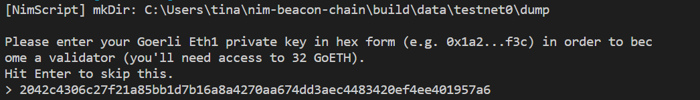
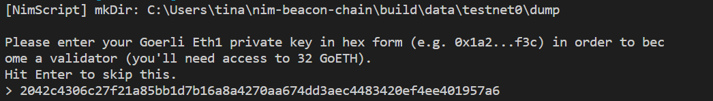

The nim-beacon-chain Book
Documentation for Nimbus Beacon Chain users and developers.
Nimbus beacon chain is a research implementation of the beacon chain component of the upcoming Ethereum Serenity upgrade, aka Eth2.
- Open sourced at github.com/status-im/nim-beacon-chain.
- Specification of our implementation can be found at ethereum/eth2.0-specs.
Overview
In this book, we will cover:
- What is beacon chain and what is Nimbus to equip you with some basic knowledge.
- How to become a validator in Ethereum 2.0 as a user.
- Installation steps for nimbus beacon chain.
- CLI for running your customized nimbus beacon node.
- Advanced usage for developers.
- Common questions and answers to satisfy your curiosity.
- How to contribute to this book.
Feel free to give us feedback on how to improve as well as contribute to our book on github. :)
Disclaimer
This documentation is assuming Nimbus is in its ideal state. The project is still under active development. Please submit Github issues if encountered any problem.
Become a Validator
To become a validator, you have to first connect to a testnet, deposit your Ethers, and sync with the network.
Recommended Testnets
Though Nimbus can connect to any of the testnets published in the eth2-clients/eth2-testnets repo, below are the recommended ones:
Connecting to Testnets
Before we start, we have to obtain 32 Ethers on the Goerli testnet. Then, we can deposit 32 Ethers to the registration smart contract to become a validator.
- Open your MetaMask wallet, switch to the
Goerli Test Networkoption from the top right corner. - Copy your account address by clicking on one of your accounts.
- Post your account address on a social media platform (Twitter or Facebook). Copy the url to the post.
- Paste your post url on the Goerli faucet and select
Give me Ether > 37.5 Ethersfrom the top right cornor of the page. - Wait for a few seconds and return to your MetaMask wallet to check if you have successfully received.
- Once the prerequisites are installed, you can connect to the witti testnet with the following commands:
- Change
wittitotestnet0to connect to testnet0. - Remember to replace
makewithmingw32-makeif using Windows.
git clone https://github.com/status-im/nim-beacon-chain
cd nim-beacon-chain
git checkout devel
git pull
make update
make witti # This will build Nimbus and all other dependencies
# and connect you to witti

- The testnet should now be up and running. Then, you will be prompted to enter your private key of the account you want to deposit the 32 Ether from. Find your private key from MetaMask as below:
 

- Wait for a few seconds until you see that your deposit has been sent:

- Now you should be syncing with the network. It may take a while (may be quite a few hours). You can know that you are synced if you see the following output.

You can also get a brief estimate of the time remaining until your network gets synced by comparing the output epoch value and the one in the blockchain explorer (the witti explorer for example).
Trouble Shooting
-
The directory that stores the blockchain data of the testnet is
build/data/shared_witti_0(replacewittiwith other testnet names). Delete this folder if you want to start over. For example, you can start over with a fresh storage if you entered a wrong private key. -
Currently, you have to switch to the devel branch in order to run the validator node successfully.
-
Everytime you want to update your node to the latest version, run
git pull,make update, and thenmake witti. -
If
make updatehas been running for too long, you can usemake update V=1ormake update V=2for verbose output.
Installation
Beacon chain can run on Linux, macOS, Windows, and Android. At the moment, Nimbus has to be built from source.
External Dependencies
- Developer tools (C compiler, Make, Bash, Git)
- PCRE
Nim is not an external dependency, Nimbus will build its own local copy.
Linux
On common Linux distributions the dependencies can be installed with:
# Debian and Ubuntu
sudo apt-get install build-essential git libpcre3-dev
# Fedora
dnf install @development-tools pcre
# Archlinux, using an AUR manager for pcre-static
yourAURmanager -S base-devel pcre-static
macOS
Assuming you use Homebrew to manage packages
brew install pcre
Windows
You can install the developer tools by following the instruction in our Windows dev environment section. It also provides a downloading script for prebuilt PCRE.
Android
- Install the Termux app from FDroid or the Google Play store
- Install a PRoot of your choice following the instructions for your preferred distribution. Note, the Ubuntu PRoot is known to contain all Nimbus prerequisites compiled on Arm64 architecture (common architecture for Android devices).
Assuming Ubuntu PRoot is used
apt install build-essential git libpcre3-dev
Command-line Options
You can run your customized beacon node using the beacon_node executable. The available options are shown below.
Prerequisites
Specifying a genesis file is mandatory to run this executable. You can either get it from the official eth2 repository here or generate your own like this when starting a local testnet. You can also specify the path of your genesis file like this.
For example, download a genesis file and then run the following command to start the node:
Usage
$ ./build/beacon_node --help
Nimbus beacon node v0.3.0 (e537ed9
)
Copyright (c) 2019-2020 Status Research & Development GmbH
Nim Compiler Version 1.3.1 [Windows: amd64]
Compiled at 2020-04-16
Copyright (c) 2006-2020 by Andreas Rumpf
git hash: b4e9f8e814373fc38741736197d88475663ce758
active boot switches: -d:release
Usage:
beacon_node [OPTIONS]... command
The following options are available:
--log-level Sets the log level.
--eth1-network The Eth1 network tracked by the beacon node.
--quick-start Run in quickstart mode
-d, --data-dir The directory where nimbus will store all blockchain data.
--web3-url URL of the Web3 server to observe Eth1.
--deposit-contract Address of the deposit contract.
-b, --bootstrap-node Specifies one or more bootstrap nodes to use when connecting to the
network.
--bootstrap-file Specifies a line-delimited file of bootstrap Ethereum network addresses.
--listen-address Listening address for the Ethereum LibP2P traffic.
--tcp-port Listening TCP port for Ethereum LibP2P traffic.
--udp-port Listening UDP port for node discovery.
--max-peers The maximum number of peers to connect to
--nat Specify method to use for determining public address. Must be one of: any,
none, upnp, pmp, extip:<IP>.
-v, --validator Path to a validator private key, as generated by makeDeposits.
-s, --state-snapshot Json file specifying a recent state snapshot.
--node-name A name for this node that will appear in the logs. If you set this to
'auto', a persistent automatically generated ID will be selected for each
--dataDir folder.
--verify-finalization Specify whether to verify finalization occurs on schedule, for testing.
--stop-at-epoch A positive epoch selects the epoch at which to stop.
--metrics Enable the metrics server.
--metrics-address Listening address of the metrics server.
--metrics-port Listening HTTP port of the metrics server.
--status-bar Display a status bar at the bottom of the terminal screen.
--status-bar-contents Textual template for the contents of the status bar.
--rpc Enable the JSON-RPC server
--rpc-port HTTP port for the JSON-RPC service.
--rpc-address Listening address of the RPC server
--dump Write SSZ dumps of blocks, attestations and states to data dir
Available sub-commands:
beacon_node importValidator [OPTIONS]...
The following options are available:
--keyfile File with validator key to be imported (in hex form).
beacon_node createTestnet [OPTIONS]...
The following options are available:
-d, --validators-dir Directory containing validator descriptors named 'vXXXXXXX.deposit.json'.
--total-validators The number of validators in the newly created chain.
--first-validator Index of first validator to add to validator list.
--last-user-validator The last validator index that will free for taking from a testnet
participant.
--bootstrap-address The public IP address that will be advertised as a bootstrap node for the
testnet.
--bootstrap-port The TCP/UDP port that will be used by the bootstrap node.
-g, --genesis-offset Seconds from now to add to genesis time.
--output-genesis Output file where to write the initial state snapshot.
--with-genesis-root Include a genesis root in 'network.json'.
--output-bootstrap-file Output file with list of bootstrap nodes for the network.
beacon_node makeDeposits [OPTIONS]...
The following options are available:
--quickstart-deposits Number of quick-start deposits to generate.
--random-deposits Number of secure random deposits to generate.
--deposits-dir Folder to write deposits to.
--deposit-private-key Private key of the controlling (sending) account
--min-delay Minimum possible delay between making two deposits (in seconds)
--max-delay Maximum possible delay between making two deposits (in seconds)
beacon_node query command
Available sub-commands:
beacon_node query get <getQueryPath>
<getQueryPath> REST API path to evaluate
Advanced Usage for Developers
Latest updates happen in the devel branch which is merged into master every week on Tuesday before deploying a new testnets
The following sections explain how to setup your build environment on your platform.
Windows dev environment
Install Mingw-w64 for your architecture using the "MinGW-W64 Online
Installer" (first link
under the directory listing). Run it and select your architecture in the setup
menu (i686 on 32-bit, x86_64 on 64-bit), set the threads to win32 and
the exceptions to "dwarf" on 32-bit and "seh" on 64-bit. Change the
installation directory to "C:\mingw-w64" and add it to your system PATH in "My
Computer"/"This PC" -> Properties -> Advanced system settings -> Environment
Variables -> Path -> Edit -> New -> C:\mingw-w64\mingw64\bin (it's "C:\mingw-w64\mingw32\bin" on 32-bit)
Install Git for Windows and use a "Git Bash" shell to clone and build nim-beacon-chain.
If you don't want to compile PCRE separately, you can fetch pre-compiled DLLs with:
mingw32-make # this first invocation will update the Git submodules
mingw32-make fetch-dlls # this will place the right DLLs for your architecture in the "build/" directory
If you were following the Windows testnet instructions, you can jump back to Connecting to testnets now
You can now follow those instructions in the previous section by replacing make with mingw32-make (regardless of your 32-bit or 64-bit architecture):
mingw32-make test # run the test suite
Linux, macOS
After cloning the repo:
# Build beacon_node and all the tools, using 4 parallel Make jobs
make -j4
# Run tests
make test
# Update to latest version
git pull
make update
To run a command that might use binaries from the Status Nim fork:
./env.sh bash # start a new interactive shell with the right env vars set
which nim
nim --version # Nimbus is tested and supported on 1.0.2 at the moment
# or without starting a new interactive shell:
./env.sh which nim
./env.sh nim --version
Raspberry Pi
We recommend you remove any cover or use a fan; the Raspberry Pi will get hot (85°C) and throttle.
- Raspberry PI 3b+ or Raspberry Pi 4b.
- 64gb SD Card (less might work too, but the default recommended 4-8GB will probably be too small)
- Raspbian Buster Lite - Lite version is enough to get going and will save some disk space!
Assuming you're working with a freshly written image:
# Start by increasing swap size to 2gb:
sudo vi /etc/dphys-swapfile
# Set CONF_SWAPSIZE=2048
# :wq
sudo reboot
# Install prerequisites
sudo apt-get install git libgflags-dev libsnappy-dev libpcre3-dev
# Then you can follow instructions for Linux.
Makefile tips and tricks for developers
- build all those tools known to the Makefile:
# $(nproc) corresponds to the number of cores you have
make -j$(nproc)
- build a specific tool:
make state_sim
- you can control the Makefile's verbosity with the V variable (defaults to 0):
make V=1 # verbose
make V=2 test # even more verbose
- same for the Chronicles log level:
make LOG_LEVEL=DEBUG bench_bls_sig_agggregation # this is the default
make LOG_LEVEL=TRACE beacon_node # log everything
- pass arbitrary parameters to the Nim compiler:
make NIMFLAGS="-d:release"
- you can freely combine those variables on the
makecommand line:
make -j$(nproc) NIMFLAGS="-d:release" USE_MULTITAIL=yes eth2_network_simulation
make USE_LIBBACKTRACE=0 # expect the resulting binaries to be 2-3 times slower
Frequently Asked Questions
1. What is Beacon Chain?
A complete introduction about the beacon chain can be found in the Ethereum 2.0 blog series.
In short, the beacon chain is a new type of blockchain to help the Ethereum blockchain to smoothly transfer its consensus algorithm from PoW (Proof of Work) to PoS (Proof of Stake), aka Ethereum 2.0.
2. Differences Between Beacon Chain and Ethereum 1.0
In traditional PoW, those that propose new blocks are called miners, whereas in PoS, they are called validators. In essence, miners rely on actual hardware (such as some specifically manufactured mining machines), while validators rely on just software and a good network connection.
3. What it is Like to Be a Validator?
It is obvious that you must have enough computing power or dedicated hardware in order to be a miner, but how about being a validator? Here is a brief overview:
- A special smart contract named deposit contract is deployed on the original Ethereum blockchain. Note that in this case, the new beacon chain and the original blockchain co-exists.
- To "register" as a validator, you have to first deposit 32 Ether from your account to this smart contract.
- Run the beacon node and wait for the network to sync before your validator is activated.
- That's all! Remember to stay connected to the network, or you may lose some of your deposit, as punishment, depending on how long you're offline. :P
4. What is Nimbus?
In a sentence, Nimbus is an Ethereum 1.0 & 2.0 Client for Resource-Restricted Devices.
It is open sourced at github.com/status-im/nimbus. Development progress and updates can be viewed at the Nimbus blog.
Contribute
Follow these steps to contribute to this book!
We use an utility tool called mdBook to create online books from Markdown files.
Before You Start
- Install mdBook from here.
- Clone the repository by
git clone https://github.com/status-im/nim-beacon-chain.git. - Go to where the Markdown files are located by
cd docs.
Real-Time Update and Preview Changes
- Run
mdbook servein the terminal. - Preview the book at http://localhost:3000.
Build and Deploy
The first step is to submit a pull request to the devel branch. Then, after it is merged, do the following under our main repository:
cd nim-beacon-chaingit checkout develgit pullmake update(This is to update the submodules to the latest version)make publish-book
Trouble Shooting
If you see file conflicts in the pull request, this may due to that you have created your new branch from an old version of the devel branch. Update your new branch using the following commands:
git checkout devel
git pull
make update
git checkout readme
git merge devel
# use something like `git mergetool` to resolve conflicts, then read the instructions for completing the merge (usually just a `git commit`)
# check the output of `git diff devel`
Thank you so much for your help to the decentralized and open source community. :)